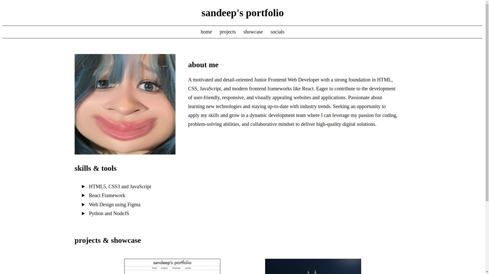
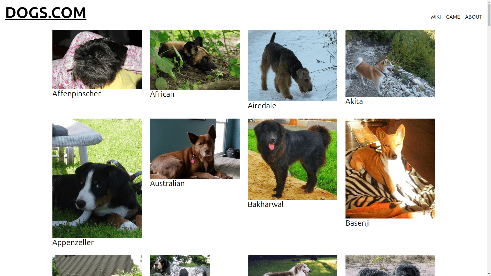
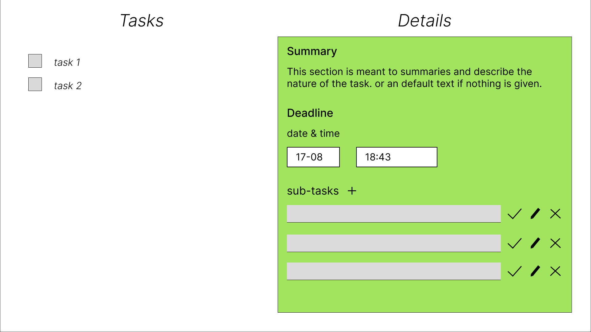

Projects

Portfolio Website
Developed and designed a personal portfolio website to showcase my skills, projects, and professional experience. Utilized [technologies/tools used, e.g., HTML, CSS, JavaScript, Figma] to create a responsive and visually appealing user interface. The website serves as a dynamic online resume, reflecting my work and expertise, while demonstrating my proficiency in web development, design, and user experience.
github repo live preview
Dog Breeds Wiki
Created an interactive website providing detailed information about various dog breeds, utilizing the Wikipedia API to fetch breed data and images. The site features an engaging "Guess the Breed" quiz, allowing users to test their knowledge with breed images and multiple-choice answers. Built using [technologies/tools used, e.g., JavaScript, HTML, CSS, API integration], the website combines informative content with interactive elements, offering an engaging learning experience for dog enthusiasts.
github repo live preview
Task Management App
Developed a task management web application using JavaScript, HTML, and CSS, designed with Figma. The app allows users to create, edit, and organize tasks with features like task prioritization, deadlines, and status tracking. The project focuses on providing an intuitive user interface and smooth user experience
github repo live preview